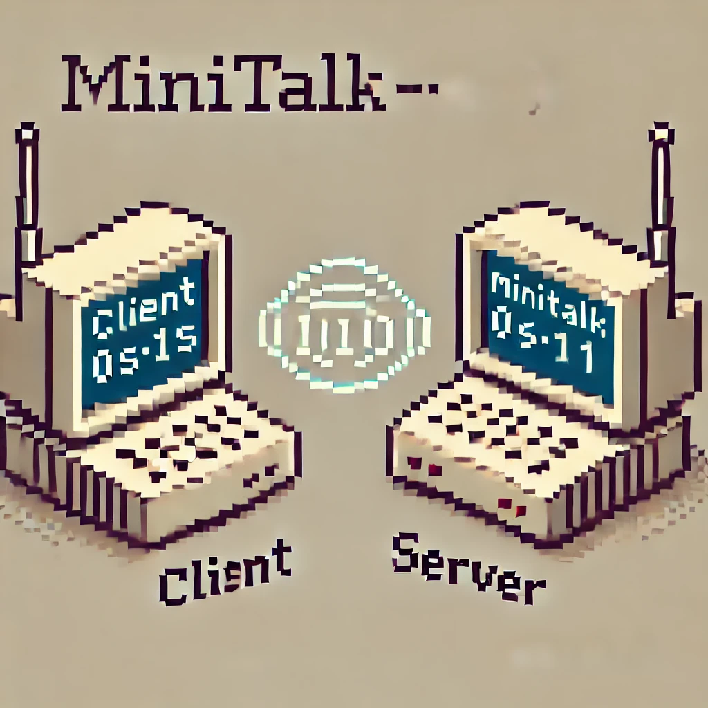

Minitalk is a project that focuses on interprocess
communication using signals in Unix.
It involves sending messages between processes
by encoding and decoding information with
binary signals. The challenge is to manage
signal handling efficiently for communication.
The system relies on the use of SIGUSR1 and SIGUSR2
to transmit data bit by bit between a client
and a server, ensuring message integrity.
The goal is to establish a reliable messaging
system that works within the constraints of
Unix signals and processes.
The bonus extends the project by adding
support for multiple messages and error handling.